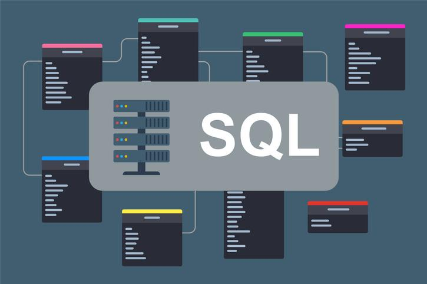

Data Cleaning in SQL
In this project, I transformed raw layoff data using MySQL to improve its quality and usability for analysis.

Delivering Data-Driven Analysis to Support Actionable Insights for Informed Decision-Making
Leveraging Excel, SQL, Power BI, Tableau, and Python to Extract, Analyze, and Visualize Data Effectively
In this project, I transformed raw layoff data using MySQL to improve its quality and usability for analysis.

For this project, I used fictitious call center contact data and cleaned it to improve its usability.

In this Tableau project, I used fictitious Airbnb data files to build an effective and informative visualization.

Developed a Python-based BMI calculator using CDC BMI calculation guidelines.
Created Power BI visualizations using sample survey data to support data analysis.

Conducted exploratory data analysis on world layoff trends with MySQL.

Across these three projects, I used Python to scrape and analyze data from websites including Wikipedia, Amazon, and cryptocurrency sources.